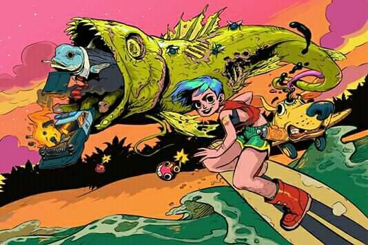

Müfff es una banda que aterrizo en el 2012 por Ituzaingó, conformada hoy en día por Cristian Fabrizio (Voz y Guitarra) Dante Marengo (Bateria) Fieldy Aguirre (Bajo) Juan Cruz Díaz Fernandez (Guitarra). Bucea por el ruido, lo alternativo, la energía y la adrenalina. Con dos EPs editados por Flah Raw Records, "Betty" (solo formato físico) y el reciente "Su Segundo Nombre Es Peligro" buscan expandir horizontes dentro de este universo.